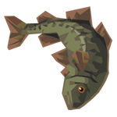
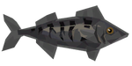
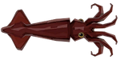
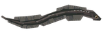
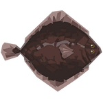
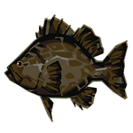
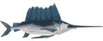
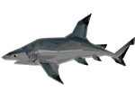
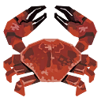
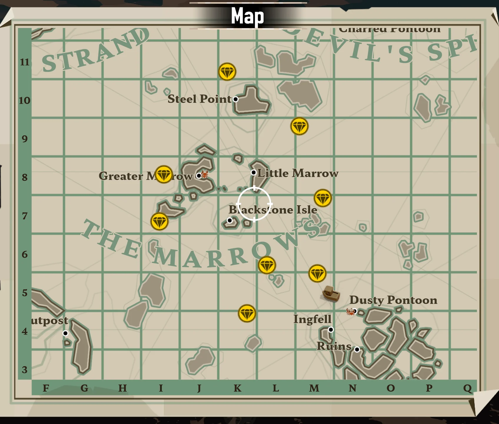

Zona inicial del juego donde comienzas tu aventura y aprendes las mecánicas básicas.
| Imagen | Nombre | Tipo | Horario |
|---|---|---|---|
 |
Bacalao | Costero | Día |
 |
Caballa Azul | Costero | Día |
 |
Calamar flecha | Costero | Noche |
 |
Anguila gris | Superficial | Día/Noche |
 |
Lenguado del golfo | Superficial | Día |
 |
Mero Negro | Superficial | Noche |
 |
Pez Vela | Oceanico | Día |
 |
Tiburon de arrecife de punta negra | Oceanico | Noche |
 |
Cangrejo comun | Trampa de cangrejos | Día/noche |

Las Vértebras es una zona tranquila con secretos ocultos bajo sus aguas.